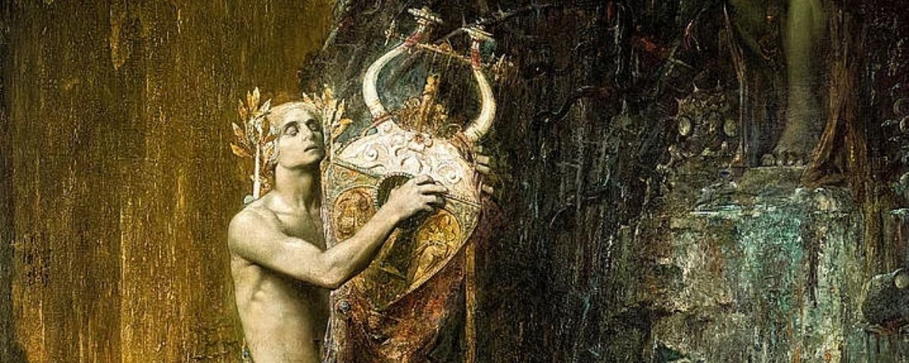

④ Dual coding
WD2_03.03.01 – situeren in tijd & ruimte

Ad Inferos
naar Vergilius, Georgica IV, 464–470 · de afdaling van Orpheus
① Voorkennis activeren
WD2_03.03.01 – situeren in tijd & ruimte
Context
Mythologische achtergrond
Eurydice is gestorven aan een slangenbeet. Orpheus, de grootste muzikant van de mythologie, kan haar verlies niet dragen. Vergilius toont in dit fragment uit de Georgica (ca. 29 v.Chr.) hoe Orpheus zijn verdriet eerst probeert te verdoven met zijn lier — maar dan de ongekende stap zet: hij daalt af naar de onderwereld om zijn vrouw terug te halen. Met zijn zang betreedt hij Tainaron, de poort van de Hades, en staat hij oog in oog met Dis, de heerser van de doden, en de schimmen die geen gebed van mensen ooit kan vermurwen.
④ Dual coding
WD2_03.03.01 – situeren in tijd & ruimte
⑥ Check begrip hele klas
⑦ Scaffolding
WD2_03.02.01 – tekst begrijpen
WD2_03.02.02 – betekenis geven
⑦ Scaffolding → zelfstandig
WD2_03.02.01.02 – talige hulpmiddelen
⑤ Actieve verwerking
⑦ Scaffolding
WD2_03.02.01.01 – lectuurmethode toepassen
WD2_03.02.01 – tekst begrijpen
Lectuuranalyse — vraag bij dit vers
③ Voorbeelden & modelling
⑤ Actieve verwerking
WD2_03.02.01.01 – lectuurmethode toepassen
WD2_03.01.01 – taalsystematiek
v. 464
Ipse
cava
solans aegrum testudine amorem
v. 465
te,
dulcis coniunx,
te solo in litore secum,
v. 466
te veniente die,
te decedente canebat.
v. 467
Taenarias etiam fauces,
alta ostia Ditis,
v. 468
et caligantem nigra formidine lucum
v. 469
ingressus
Manesque adiit
regemque tremendum
v. 470
nesciaque humanis precibus mansuescere corda.
464Ipse cava solans aegrum testudine amorem
465te, dulcis coniunx, te solo in litore secum,
466te veniente die, te decedente canebat.
467Taenarias etiam fauces, alta ostia Ditis,
468et caligantem nigra formidine lucum
469ingressus Manesque adiit regemque tremendum
470nesciaque humanis precibus mansuescere corda.
⑦ Scaffolding
⑪ Feedback die denken aanzet
WD2_03.01.01 – taalsystematiek
Grammaticale noten
1solans aegrum testudine amorem — participium praesens actief bij Ipse. Testudine is ablativus instrumenti: de lier als instrument van zelfvertroosting. Aegrum amorem: epitheton ornans — de liefde is letterlijk 'ziek', een lichamelijke kwaal bij Vergilius.
2te … te … te … te — viervoudige anafora van het accusatief-pronomen. Orpheus zingt steeds over hetzelfde object: Eurydice. De herhaling verbeeldt de obsessieve, allesoverweldigende rouw. De vier te's kaderen in de structuur van een dag: oever, ochtend, avond.
3veniente die … decedente — twee ablativi absoluti met participium praesens en ablativus van dies. Ze geven de tijdskaders aan: het aanbreken en het vallen van de dag. De dag gaat voorbij, maar Orpheus zingt onafgebroken.
4Taenarias fauces … alta ostia Ditis … lucum — drie accusativi als voorwerpen bij het deponens ingressus: de nauwe ingang van Tainaron, de poort van de onderwereld, en het donkere woud. De drieledige structuur bouwt op naar het diepst van de Hades.
5ingressus — PPP (deponens) van ingredi. Let op: deponens-werkwoorden hebben een passieve vorm maar actieve betekenis. Ingressus is nom. enk. m. bij het impliciete subject Orpheus: 'binnengegaan zijnde' = 'nadat hij was binnengegaan'.
6Manesque … regemque … corda — drie accusativi verbonden met -que: de schimmen, de koning (Dis) en de harten. Het is een klimax: van de anonieme massa schimmen, via de machtige heerser, naar het abstrakte probleem: harten die niet zacht worden.
7nesciaque humanis precibus mansuescere corda — nescia (adj. van nescire) met infinitief: 'de harten die niet weten te vermurwen'. Humanis precibus ablativus van middel: menselijke gebeden zijn machteloos in de Hades. Dit is het kernprobleem — en toch probeert Orpheus het.
8caligantem nigra formidine — participium praesens van caligare (donker zijn, wazig worden) + ablativus causae nigra formidine: 'donker van zwarte angst'. Vergilius stapelt de duisternis: het woud is donker (part.) door zwarte (adj.) angst (subst.).
① Voorkennis activeren
⑧ Gespreide oefening
WD2_03.01.01 – basisvocabularium
WD2_03.02.02 – betekenis geven aan teksten
Tekst 2 · Thema 3 · 4de jaar
Woordenlijst
Woordenlijst op volgorde van voorkomen. basis = basiswoordenschat.